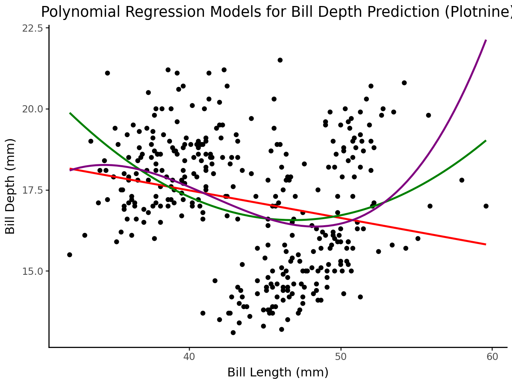

Import the Palmer Penguins dataset and print out the first few rows.
Suppose we want to predict bill_depth_mm using the other variables in the dataset.
Which variables would we need to dummify?
!pip install palmerpenguins
Requirement already satisfied: palmerpenguins in /usr/local/lib/python3.12/dist-packages (0.1.4)
Requirement already satisfied: pandas in /usr/local/lib/python3.12/dist-packages (from palmerpenguins) (2.2.2)
Requirement already satisfied: numpy in /usr/local/lib/python3.12/dist-packages (from palmerpenguins) (2.0.2)
Requirement already satisfied: python-dateutil>=2.8.2 in /usr/local/lib/python3.12/dist-packages (from pandas->palmerpenguins) (2.9.0.post0)
Requirement already satisfied: pytz>=2020.1 in /usr/local/lib/python3.12/dist-packages (from pandas->palmerpenguins) (2025.2)
Requirement already satisfied: tzdata>=2022.7 in /usr/local/lib/python3.12/dist-packages (from pandas->palmerpenguins) (2025.2)
Requirement already satisfied: six>=1.5 in /usr/local/lib/python3.12/dist-packages (from python-dateutil>=2.8.2->pandas->palmerpenguins) (1.17.0)
from palmerpenguins import load_penguinspenguins = load_penguins()
penguins.head()
species
island
bill_length_mm
bill_depth_mm
flipper_length_mm
body_mass_g
sex
year
0
Adelie
Torgersen
39.1
18.7
181.0
3750.0
male
2007
1
Adelie
Torgersen
39.5
17.4
186.0
3800.0
female
2007
2
Adelie
Torgersen
40.3
18.0
195.0
3250.0
female
2007
3
Adelie
Torgersen
NaN
NaN
NaN
NaN
NaN
2007
4
Adelie
Torgersen
36.7
19.3
193.0
3450.0
female
2007
Let’s use bill_length_mm to predict bill_depth_mm. Prepare your data and fit the following models on the entire dataset:
Simple linear regression (e.g. straight-line) model
Quadratic (degree 2 polynomial) model
Cubic (degree 3 polynomial) model
Degree 10 polynomial model
Make predictions for each model and plot your fitted models on the scatterplot.
import pandas as pd# Select relevant columns and drop rows with missing valuesdata = penguins[['bill_length_mm', 'bill_depth_mm']].dropna()# Separate features (X) and target (y)X = data[['bill_length_mm']]y = data['bill_depth_mm']display(data.head())
bill_length_mm
bill_depth_mm
0
39.1
18.7
1
39.5
17.4
2
40.3
18.0
4
36.7
19.3
5
39.3
20.6
Using different models to predict:
Importing libraries:
import numpy as npfrom sklearn.linear_model import LinearRegression
Create a dataframe with original bill length and bill depth
# Create a DataFrame with the original bill_length_mm and bill_depth_mmpredicted_df = pd.DataFrame({'bill_length_mm': X.values.flatten(), 'bill_depth_mm': y.values})
Simple linear regression
# simple linear regressionmodel_liner = LinearRegression()model_liner.fit(X,y)y_pred_liner = model_linear.predict(X)# add the predicted values for simple linear regressionpredicted_df['linear_pred'] = y_pred_linear
Quadratic Model:
#quadratic (degree 2 polynomial)from sklearn.preprocessing import PolynomialFeaturespoly_2 = PolynomialFeatures(degree=2)X_poly_2 = poly_2.fit_transform(X)model_quadratic = LinearRegression()model_quadratic.fit(X_poly_2, y)y_pred_quadratic = model_quadratic.predict(X_poly_2)# adding the predicted values of quadratic model into the dataframepredicted_df['quadratic_pred'] = y_pred_quadratic
Cubic Model:
# Cubic Modelpoly_3 = PolynomialFeatures(degree=3, include_bias =False)X_poly_3 = poly_3.fit_transform(X)model_cubic = LinearRegression()model_cubic.fit(X_poly_3, y)y_pred_cubic = model_cubic.predict(X_poly_3)# adding the predicted values of cubic model into the dataframepredicted_df['cubic_pred'] = y_pred_cubic
---------------------------------------------------------------------------NameError Traceback (most recent call last)
/tmp/ipython-input-216350509.py in <cell line: 0>() 1# Cubic Model----> 2poly_3 = PolynomialFeatures(degree=3, include_bias =False) 3 X_poly_3 = poly_3.fit_transform(X) 4 5 model_cubic = LinearRegression()NameError: name 'PolynomialFeatures' is not defined
Degree 10:
# Degree 10 Polynomial Modelpoly_10 = PolynomialFeatures(degree=10, bias)X_poly_10 = poly_10.fit_transform(X)model_degree_10 = LinearRegression()model_degree_10.fit(X_poly_10, y)y_pred_degree_10 = model_degree_10.predict(X_poly_10)# adding the predicted values of degree 10 model into the dataframepredicted_df['degree_10_pred'] = y_pred_degree_10
# Display the first few rows of the new DataFramedisplay(predicted_df.head())
bill_length_mm
bill_depth_mm
linear_pred
quadratic_pred
cubic_pred
degree_10_pred
0
39.1
18.7
17.561136
17.484121
17.763289
18.385233
1
39.5
17.4
17.527128
17.392292
17.688565
18.263916
2
40.3
18.0
17.459111
17.223194
17.532171
17.959386
3
36.7
19.3
17.765187
18.136996
18.128998
18.487002
4
39.3
20.6
17.544132
17.437600
17.726273
18.327503
Plotting
import plotnine as p9
from plotnine import ggplot, aes, geom_point, geom_smooth, labs, theme_classicp = (ggplot(data, aes(x='bill_length_mm', y='bill_depth_mm'))+ geom_point()+ theme_classic())# Add the fitted models as smooth lines# Simple Linear Regressionp = p + geom_smooth(method='lm', se=False, color='red', linetype='solid')# Quadratic Model (using formula for polynomial regression)p = p + geom_smooth(method='lm', formula='y ~ x + I(x**2)', se=False, color='green', linetype='solid')# Cubic Model (using formula for polynomial regression)p = p + geom_smooth(method='lm', formula='y ~ x + I(x**2) + I(x**3)', se=False, color='purple', linetype='solid')# Degree 10 Polynomial Model (using formula for polynomial regression)# Note: Plotnine's geom_smooth might struggle with very high degree polynomials.# A more robust approach for higher degrees would be to generate predictions# from the fitted sklearn models and plot those as lines.# For demonstration, let's try with formula up to degree 3, and explain# how to plot higher degrees by generating predictions.# Add labels and titlep = p + labs(x='Bill Length (mm)', y='Bill Depth (mm)', title='Polynomial Regression Models for Bill Depth Prediction (Plotnine)')# Display the plotp

Are any of the models above underfitting the data? If so, which ones and how can you tell?
Are any of thhe models above overfitting the data? If so, which ones and how can you tell?
Which of the above models do you think fits the data best and why?
Based on the plot above, the variables do not show a clear relationship with each other in the plot. Model 1 is too simple to capture any linearity, while the degree 10 model tries too hard to fit the training data, essentially identifying patterns that may not actually exist. This overfitting means the degree 10 model might not accurately explain the relationship between variables in a different dataset.
The quadratic (degree 2) and cubic (degree 3) models provide a better fit, as they capture some relationship between the variables without overfitting. Between the two, the quadratic model may be preferred for its simplicity and reproducibility. The added complexity of the degree 10 model does not offer a better representation of the data compared to the quadratic model.